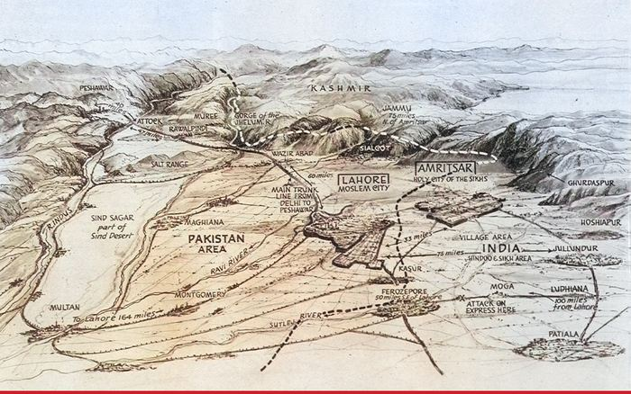

Room 07
Last Frontiers
At the end of the collection the European gaze reaches its limits. The remaining maps look toward the strategic frontier, the wartime public and the hurried end of empire: Central Asia as margin, India compressed for a newspaper audience, Portuguese enclaves counted from Lisbon, and alternative partition boundaries examined before the states they would divide had come into being. The 1947 panorama is an epilogue – the imperial boundary-making process after it had become a lived catastrophe on both sides.
 General Map of Central Asia and TibetHedin, Sven; Kjellström, Otto; Byström, H. · 19221922
General Map of Central Asia and TibetHedin, Sven; Kjellström, Otto; Byström, H. · 19221922  L’IndeJacques Mercier · c.19421942
L’IndeJacques Mercier · c.19421942  India Showing Civil Divisions – Boundaries of Pakistan (Case A / Case B)Great Britain. War Office. General Staff, Geographical Section (G.S.G.S.) · 19461946
India Showing Civil Divisions – Boundaries of Pakistan (Case A / Case B)Great Britain. War Office. General Staff, Geographical Section (G.S.G.S.) · 19461946  Carta demográfica do Estado da Índia – Goa, Damão and DiuPortugal, Ministério das Colónias and Junta de Investigações Coloniais · map dated 19461946
Carta demográfica do Estado da Índia – Goa, Damão and DiuPortugal, Ministério das Colónias and Junta de Investigações Coloniais · map dated 19461946 
Where Pakistan and India Come Face to Face – the PunjabHome, Percy (artist); The Sphere · 19471947 · Epilogue